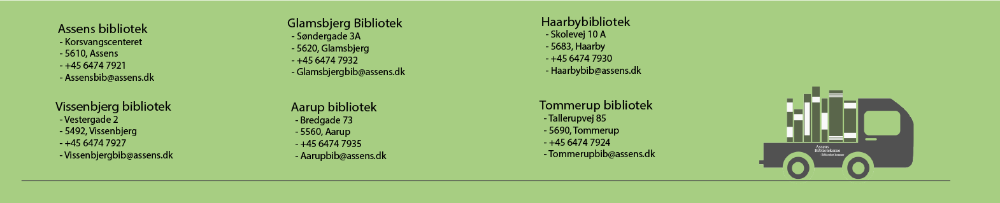

Er du grundet alderdom eller handicap forhindret i at besøge biblioteket, kan du tilmelde dig "Biblioteket kommer", en ydelse hvor du via en kontaktperson kan reservere og låne bibliotekernes materiale, og få det bragt hjem til dig.
Biblioteket kommer
- Et tilbud til ældre og handicappede i Assens Kommune
Med ”Biblioteket kommer” får du mulighed for at få leveret materialer fra biblioteket til din bopæl fast en gang om måneden. Du kan låne bøger, også med stor skrift, lydbøger, tidsskrifter, musik og film.
Tilmelding
Du kan tilmelde dig ordningen på nedenstående måder
- Send en e-mail
- Ring til dit bibliotek
Bestilling
Som "biblioteket kommer"-låner, får du en personlig kontaktperson, som vil hjælpe dig med både reservationer, vejledning og lån.
Udover din personlige kontaktperson, vil der kunne lånes materiale på følgende måder:
Aflevering
Du har to afleveringsmuligheder som "biblioteket kommer"-låner.
- Det vil være muligt at aflevere alt lånt materiale på et af kommunens biblioteker.
- Er der genbestilt nyt materiale, vil det være muligt at give sine udløbede materialer til personalet ved levering.
OBS. Afleveres materiale på ovenstående måde, vil materialet først anses som afleveret, når det er registreret hos et af vores biblioteker.
Herunder kan du se hvilke biblioteker som hører til kommunen, og som tilbyder denne ordning:
